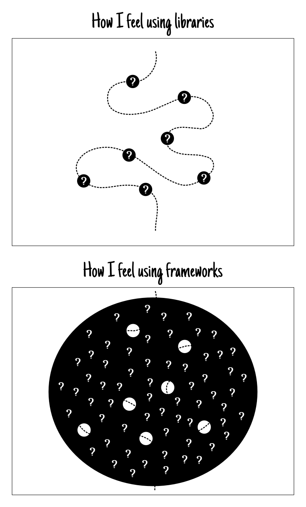
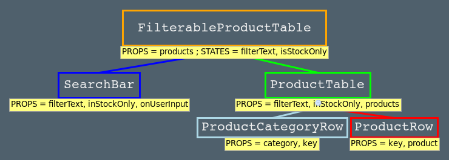

React.js
Introduction
twitter.com/ticabri
github.com/enguerran
Enguerran Colson

Qui êtes-vous ?
- Qui fait du javascript ?
- Tout le monde connait React ? releaseDate > 6
- Qui développe actuellement un projet avec React ?
Good code

Qui a déjà galéré sur de la synchro d'UI et de modèle ?
Pourquoi React ?

Pourquoi React ?
- Composition et réutilisation: React components
- Accès au DOM coûteux: virtual DOM
- Frameworks = pièges: React est une bibliothèque
Framework vs. library 101
"your code calls a library, a framework calls your code"
Example
notification states and transitions
Three states → Six transitions
N states → (N² - N) transitions

Imperative Programming
Dummy implementation
if(count > 99) {
if(!isOnFire()) addFire();
} else {
if(isOnFire()) removeFire();
}
if(count === 0) {
if(hasSome()) removeSome();
notification.innerHTML = '';
} else {
if(!hasSome()) addSome(count);
var countText = count > 99 ? '99+' : count.toString();
notification.innerHTML = countText;
}
Describes computation in terms of statements that change a program state
Declarative Programming
React implementation
render: function() {
if(count === 0) {
return (<div class="notification"></div>);
} else if(count <= 99) {
return (<div class="some notification">{count}</div>);
} else {
return (<div class="some notification onfire">99+</div>);
}
}
We model the states and not the transitions
Comment ça marche ?

Comment ça marche ?

var ProductTable = React.createClass({
render: function() {
var rows = [];
this.props.products.forEach(function(product) {
rows.push(<ProductRow product={product} key={product.name} />);
});
return (
<table>
<thead>
<tr>
<th>Name</th>
<th>Price</th>
</tr>
</thead>
<tbody>{rows}</tbody>
</table>
);
}
});
var ProductRow = React.createClass({
render: function() {
var name = this.props.product.stocked ?
this.props.product.name :
<span style={{color: 'red'}}>
{this.props.product.name}
</span>;
return (
<tr>
<td>{name}</td>
<td>{this.props.product.price}</td>
</tr>
);
}
});
Components lifecycle
- componentWillMount
- componentDidMount
- componentWillUpdate
- componentDidUpdate
- componentWillUnmount
- shouldComponentUpdate
- componentWillReceiveProps
Props & States
Props
Configuration des composants
Hérités donc immuables
Un component donne les props aux enfants
State
States changent au cours du temps
Un component gère son propre état
Représentation sérializable, un snaptshot
Virtual DOM
React utilise un virtual DOM et ne va accéder au vrai DOM que si nécessaire.
React crée un virtual DOM à chaque fois que les components sont dessinés et le compare avec le précédent pour déterminer la plus légère modification à apporter au DOM.
Stratégies du virtual DOM
- Heuristique de diff d'arbres
- Utilisation de clef et d'ID
- Nommage des noeuds plutôt que des divs
- Délégation d'évènements
- Traitement par lot (batching)
Une bibliothèque
React + (Angular || Backbone || Ember)
React Elements : intégration avec les bibliothèques tierces ➥
Architecture flux ➥
Flux


Merci
Resources
- React Blog, par Facebook team ➥
- Introduction à ReactJS, par putaindecode.fr ➥
- ReactJS, par Adam Solove ➥
- Decomplexifying Code with React, par Steven Luscher➥
- Removing User Interface Complexity, or Why React is Awesome, par James Long ➥
- React.js Internals, par Nick Niemeir ➥
- React's diff algorithm, par Christopher Chedeau ➥
- React.js: Secrets of the Virtual DOM, par Pete Hunt ➥